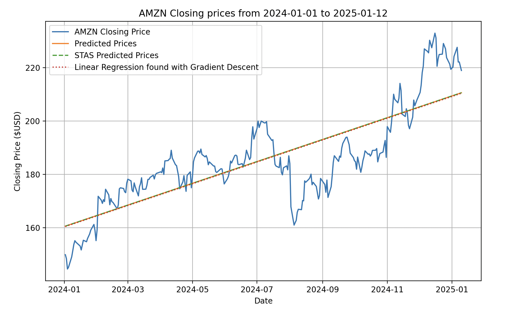
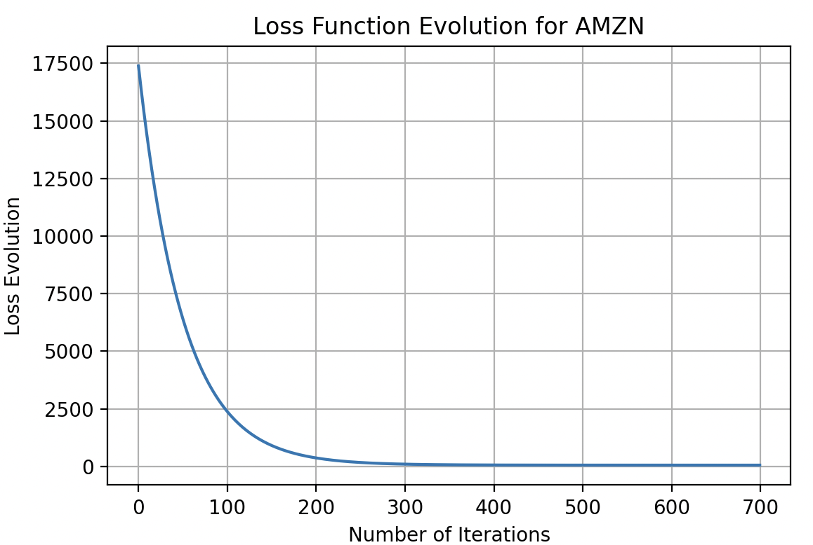
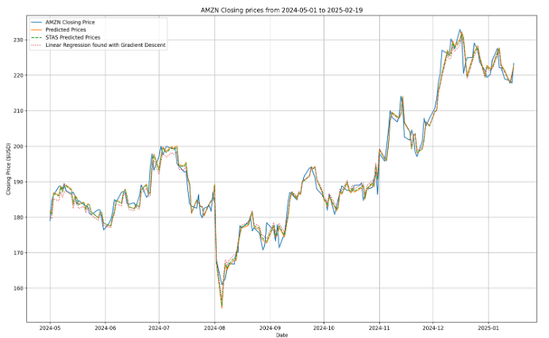
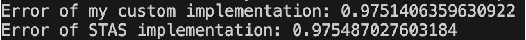
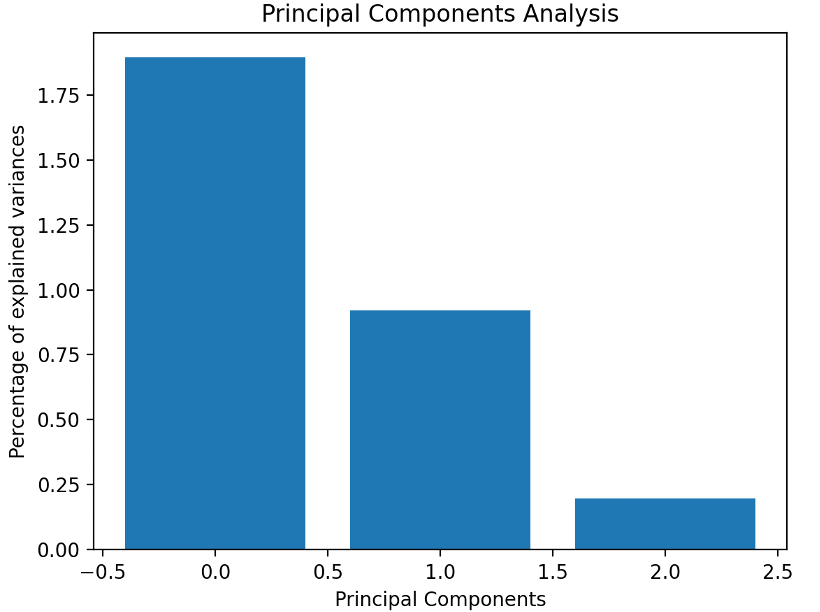
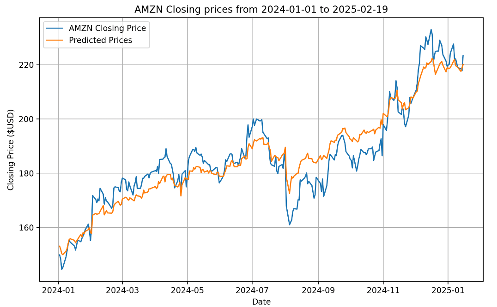
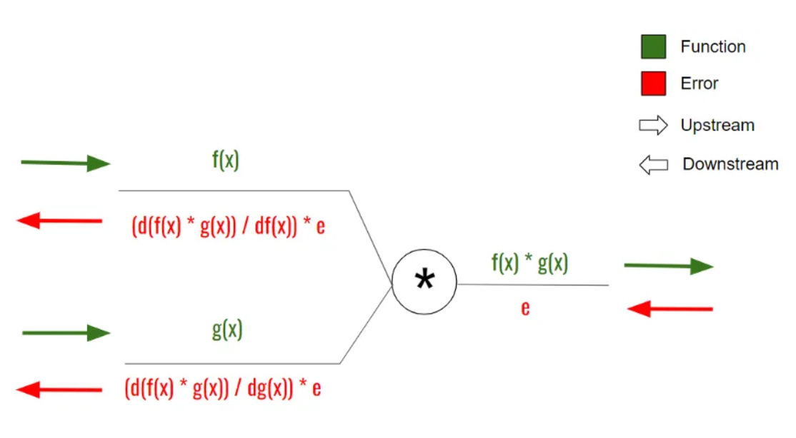
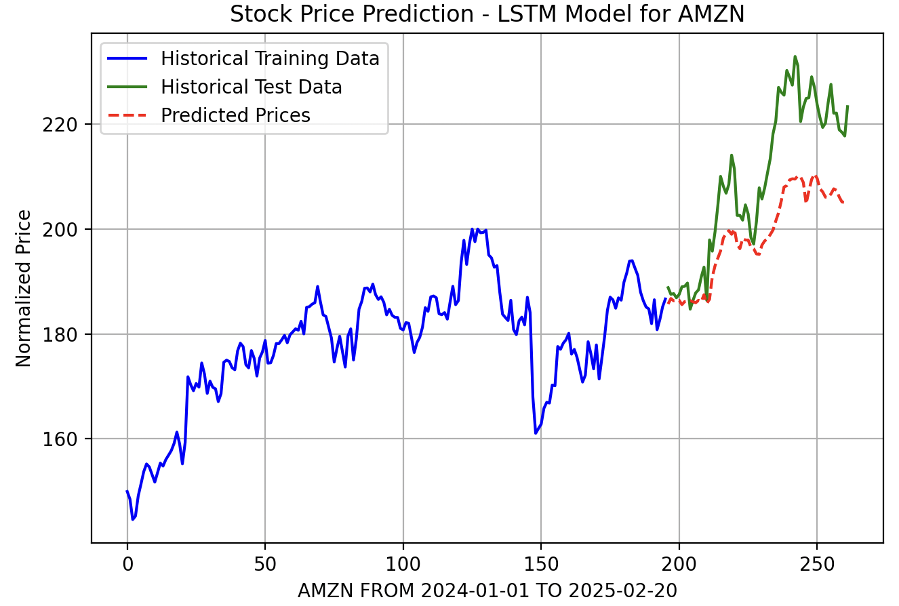
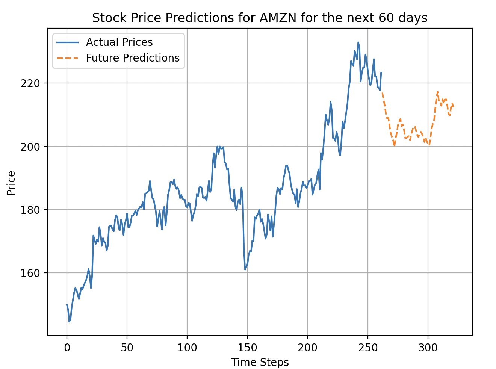

Code: ML101
Introduction
I am very passionate about stock movement, being a beginner investor myself, and my motivation was to make a Machine Learning application that could analyze current stock prices and predict their future.
This project includes:
Loading and fetching stock prices from a
.txtfile into a database using MySQL.Division of the stock into specific quarters and viewing their trend through Linear Regression (rising or falling).
Implementation of Principal Component Analysis from scratch for full comprehension of the subject.
Applying an advanced Machine Learning algorithm to predict future stock prices — Long Short-Term Memory.
Data Set
The dataset used for this implementation was acquired from Yahoo Finance using yfinance in Python. I used MySQL to store the information (timeseries), and the code from class Database_Injection can be called at any time to update the stocks with their latest updates. The time span is from 1990 to the present day. The main stocks I tested my algorithms on were AMZN, TSLA, PLTR, BTC-USD, and AAPL.
The data was transferred into 7 columns:
INSERT INTO stocks (ticker, date, open_price, high_price, low_price, close_price, volume)
Preprocessing the Data
For the methods to work, the data had to be normalized (for some reason, standardization would introduce nonlinearities). The date was converted into numerical input and subtracted with the minimum value.
Where:
-
: the original value of the variable,
-
: the minimum value in the dataset for the variable,
-
: the maximum value in the dataset for the variable,
-
: the normalized value, scaled between 0 and 1.
For standardization:
Where:
-
is the original value,
-
is the mean of the data,
-
is the standard deviation of the data,
-
is the standardized value.
Linear Regression
When there is only one independent feature, it is known as Simple Linear Regression, and when there are more than one feature, it is known as Multiple Linear Regression.
Linear regression asserts that the response is a linear function of the inputs:
Where:
-
represents the inner or scalar product between the input vector and the model’s weight vector ,
-
is the residual error between our linear predictions and the true response,
-
is the output or target variable (often the
close_pricecolumn).
Linear Regression through Gradient Descent
The algorithm optimizes the model’s weights to minimize the Mean Squared Error (MSE) between the predicted values and the actual target values.
The key steps of the method are:
- Initialization:
-
The number of coefficients is determined based on the number of features in .
-
The coefficients are initialized to zero.
- Gradient Descent Loop:
- Predict target values using current weights:
- Compute cost function (MSE):
- Compute gradients and update weights:
- Output:
-
Return the final predictions and the loss history.
To confirm both methods, I compared them with the STAS Linear Regression implementation from sklearn:

Error of my custom implementation: 0.633773484916956
Error of STAS implementation: 0.6337734849169716
Loss function evolution over 700 iterations:



Principal Component Analysis (PCA)
PCA can be framed as an optimization problem, where the goal is to maximize the amount of information captured by the projected data. For example, when projecting a data point x onto a unit vector u, the resulting projection x′ has the magnitude:
If = 1 and represents the amount of information stored about the point , the optimization problem to solve is:
Steps to Perform PCA:
-
Standardization - Ensures mean 0 and variance 1.
-
Compute Covariance Matrix: The covariance matrix captures the linear relationship between the variables. It can be computed using the formula:
- Compute Eigenvalues and Eigenvectors:
Solving this equation provides the eigenvalues λ , which are then used to compute the eigenvectors. I computed them through QR Decomposition using the Householder Method from scratch
By following these steps, PCA identifies the directions (principal components) that maximize the variance in the data, thereby reducing its dimensionality while preserving critical information – about 93.47%


Long Short-Term Memory (LSTM)
It is a sequential NN (type of RNN) that allows information to persist over long periods of time. It is a good solution to RNN which would either explode or vanish in the Gradient Descent phase. What I mean by that is that a weight to any power, be it either 0.5 or 2 would either get super close to 0 or to . It excels in capturing long-term dependencies (like remembering the chapter 1 from a book) and is ideal for sequence predictions tasks.
LSTM Forward Propagation Through Gates
- Forget Gate:
- Candidate Gate:
- Input Gate:
- Output Gate:
Back Propagation
To learn and compute better weights and biases, the neural network does that through back propagation. It basically computes the partial derivatives (gradients) of the output from each gate to it’s inputs. That way, it multiplies the results through the learning rate and updates the new set of parameters for the next prediction.

Testing and Training: To test and train the network, I split the data in a training set and a validation set.

Predicting Future Prices: I would also try and predict the future prices for a set number of days.
